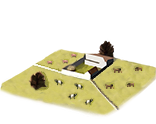
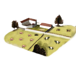
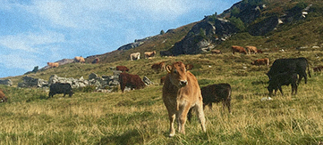
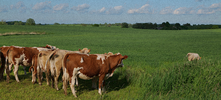
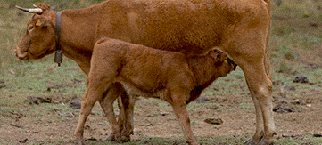
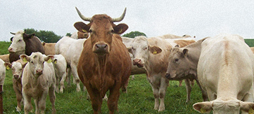
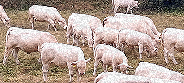

RTR: Imperium Surrectum
RTR: Imperium SurrectumOpen Field Pasturing (Husbandry) chain
5 levels, each replacing the one before it — you upgrade in place rather than building alongside.
Open Field Pasturing (Husbandry) → Enclosures (Husbandry) → Breeding Farms (Husbandry) → Great Droveways (Husbandry) → Livestock Estates (Husbandry)
Pictures are the game's own building art. Where a culture ships none of its own, the game falls back to another culture's, and that is what is shown here.
Levels at a glance
| Level | Cost | Build time | Minimum settlement | Upgrades to | Level | Cost | Build time | Minimum settlement | Upgrades to | ||
|---|---|---|---|---|---|---|---|---|---|---|---|
| Open Field Pasturing (Husbandry) | 900 | 2 | town | Enclosures (Husbandry) | Enclosures (Husbandry) | 2,100 | 4 | large town | Breeding Farms (Husbandry) | ||
| Breeding Farms (Husbandry) | 4,200 | 6 | city | Great Droveways (Husbandry) |  | Great Droveways (Husbandry) | 6,400 | 8 | large city | Livestock Estates (Husbandry) | |
 | Livestock Estates (Husbandry) | 8,500 | 10 | huge city | — |
Costs in denarii, build time in turns.
Open Field Pasturing (Husbandry)

Unenclosed fields for grazing livestock
This region boasts many open grasslands that might have been used for growing grain but instead animal grazing has become the dominant land use. While animal husbandry is not as efficient at feeding large numbers of people, it can be very profitable. Simply letting our herds graze freely is also a very easy way of utilizing these lands.
Livestock farms are available here because it is a grassland, small island/rocky coast, river valley or floodplain region. Note that nomadic factions prefer nomadic pastoralism in grassland region instead.
Note on the effects
Some levels of this building chain might have both positive and negative growth modifiers on the same building, this is due to a modding limitation. In these cases, all effects apply. So if it says +3 growth and -0.5 growth, your total growth is +2.5. Tip: put any building in the building queue (and only that one) and look at the 'Settlement income' and 'Settlement details' tabs to see its complete effects highlighted in green and red.
| Cost | 900 denarii | Build time | 2 turns | Minimum settlement | town | Upgrades to | Enclosures (Husbandry) |
What it does
- -3 population growth (player only)
Show 4 effects that apply only in the circumstances shown
- +4 farming level — only when
not resource livestock - +5 farming level — only when
resource livestock - -3 population growth — only when
not is_player and building_present_min_level sedentary_animal_husbandry open_grazing_fields - +1 trade income — only when
sedentary_trade_animals
Enclosures (Husbandry)

Enclosures for managing bigger herds and supporting a meat and dairy industry
Though open field grazing is an easy way to raise livestock putting up enclosures makes it a lot more clear what belongs to whom and it helps shelter the precious animals from predators and thieves alike. Keeping our herds penned also ensures a reliable source of meat for the town, part of which is salted and cured so that it can keep for winter or be traded to further destinations. While similarly the milk of sheep, cattle and goats is made into prized cheeses.
Livestock farms are available here because it is a grassland, small island/rocky coast, river valley or floodplain region. Note that nomadic factions prefer nomadic pastoralism in grassland region instead.
Note on the effects
Some levels of this building chain might have both positive and negative growth modifiers on the same building, this is due to a modding limitation. In these cases, all effects apply. So if it says +3 growth and -0.5 growth, your total growth is +2.5. Tip: put any building in the building queue (and only that one) and look at the 'Settlement income' and 'Settlement details' tabs to see its complete effects highlighted in green and red.
| Cost | 2,100 denarii | Build time | 4 turns | Minimum settlement | large town | Upgrades to | Breeding Farms (Husbandry) |
What it does
- -4 population growth (player only)
Show 6 effects that apply only in the circumstances shown
- +6 farming level — only when
not resource livestock - +7 farming level — only when
resource livestock - -4 population growth — only when
not is_player and building_present_min_level sedentary_animal_husbandry enclosures - +1 trade income — only when
salt_building_supply and not sedentary_trade_animals - +1 trade income — only when
not salt_building_supply and sedentary_trade_animals - +2 trade income — only when
salt_building_supply and sedentary_trade_animals
Breeding Farms (Husbandry)

Decicated breeding farms for producing high-quality livestock
As most animal products are luxuries the best way for this region to increase its exports is to gain a reputation for the highest quality meats, cheeses, wool and riding horses. This requires dedicated breeding farms where the breeding stock with the most desirable traits is preserved from the annual slaughter and where new, ever better, generations of animals are sired.
Livestock farms are available here because it is a grassland, small island/rocky coast, river valley or floodplain region. Note that nomadic factions prefer nomadic pastoralism in grassland region instead.
Note on the effects
Some levels of this building chain might have both positive and negative growth modifiers on the same building, this is due to a modding limitation. In these cases, all effects apply. So if it says +3 growth and -0.5 growth, your total growth is +2.5. Tip: put any building in the building queue (and only that one) and look at the 'Settlement income' and 'Settlement details' tabs to see its complete effects highlighted in green and red.
| Cost | 4,200 denarii | Build time | 6 turns | Minimum settlement | city | Upgrades to | Great Droveways (Husbandry) |
What it does
- -5 population growth (player only)
Show 6 effects that apply only in the circumstances shown
- +8 farming level — only when
not resource livestock - +9 farming level — only when
resource livestock - -5 population growth — only when
not is_player and building_present_min_level sedentary_animal_husbandry livestock_drive - +1 trade income — only when
salt_building_supply and not sedentary_trade_animals - +1 trade income — only when
not salt_building_supply and sedentary_trade_animals - +2 trade income — only when
salt_building_supply and sedentary_trade_animals
Great Droveways (Husbandry)

Annual drive of cattle and other livestock to the cities for consumption
As this region has come to produce great quantities of meat, an offical route has developed to bring the livestock to the slaughterhouses near the great cities so that the rich can have their meat fresh. Anually great herds of cattle, pigs and even poultry such as geese, are marched down this road like a great hooved and feathered army. An army sent not to conquer but to grace the tables of our urban elites.
Livestock farms are available here because it is a grassland, small island/rocky coast, river valley or floodplain region. Note that nomadic factions prefer nomadic pastoralism in grassland region instead.
Note on the effects
Some levels of this building chain might have both positive and negative growth modifiers on the same building, this is due to a modding limitation. In these cases, all effects apply. So if it says +3 growth and -0.5 growth, your total growth is +2.5. Tip: put any building in the building queue (and only that one) and look at the 'Settlement income' and 'Settlement details' tabs to see its complete effects highlighted in green and red.
| Cost | 6,400 denarii | Build time | 8 turns | Minimum settlement | large city | Upgrades to | Livestock Estates (Husbandry) |
What it does
- -8 population growth (player only)
Show 6 effects that apply only in the circumstances shown
- +11 farming level — only when
not resource livestock - +12 farming level — only when
resource livestock - -8 population growth — only when
not is_player and building_present_min_level sedentary_animal_husbandry stockbreeding_estate - +1 trade income — only when
salt_building_supply and not sedentary_trade_animals - +1 trade income — only when
not salt_building_supply and sedentary_trade_animals - +2 trade income — only when
salt_building_supply and sedentary_trade_animals
Livestock Estates (Husbandry)

Elite ranches that produce luxury animal goods for significant profit.
Our noblity no longer just feed from the trough, they have monopolized it as their great livestock estates now dot the countryside. Pigs are raised in great numbers and are brought either live or cured into the cities. Cattle are in ever greater demand as well and this region has risen to meet it. Other estates breed cavalry horses for our armies and some estates even specialize in farming wild game such as boar, deer, rabbits and fowl for the most gourmet banquets.
Livestock farms are available here because it is a grassland, small island/rocky coast, river valley or floodplain region. Note that nomadic factions prefer nomadic pastoralism in grassland region instead.
Note on the effects
Some levels of this building chain might have both positive and negative growth modifiers on the same building, this is due to a modding limitation. In these cases, all effects apply. So if it says +3 growth and -0.5 growth, your total growth is +2.5. Tip: put any building in the building queue (and only that one) and look at the 'Settlement income' and 'Settlement details' tabs to see its complete effects highlighted in green and red.
| Cost | 8,500 denarii | Build time | 10 turns | Minimum settlement | huge city |
What it does
- -10 population growth (player only)
- -1 public order (happiness) (player only)
Show 7 effects that apply only in the circumstances shown
- +13 farming level — only when
not resource livestock - +14 farming level — only when
resource livestock - -10 population growth — only when
not is_player and building_present_min_level sedentary_animal_husbandry highborn_ranches - +1 trade income — only when
salt_building_supply and not sedentary_trade_animals - +2 trade income — only when
not salt_building_supply and sedentary_trade_animals - +3 trade income — only when
salt_building_supply and sedentary_trade_animals - -1 public order (happiness) — only when
not is_player and building_present_min_level sedentary_animal_husbandry highborn_ranches
What the shorthands in those conditions stand for (2)
These are the mod's own, quoted from the game files unchanged.
| Shorthand | Stands for | Shorthand | Stands for | ||||
|---|---|---|---|---|---|---|---|
salt_building_supply | resource salt or hidden_resource salt_supply_built factionwide | sedentary_trade_animals | resource sheep or resource livestock or resource horses |